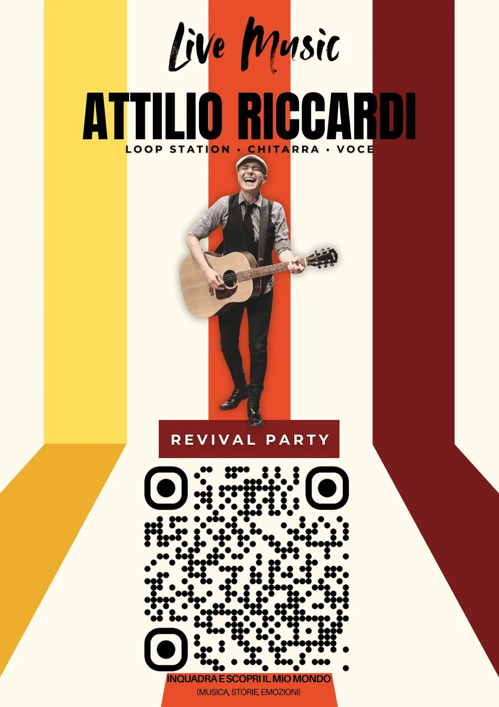

One Man Band Revival

Se cerchi un intrattenimento musicale originale e coinvolgente per feste private, matrimoni, eventi live o serate speciali, sono la persona giusta per te. Grazie all’uso della loop station e alla drum pad, creo dal vivo arrangiamenti ricchi e stratificati, che ripropongono l’energia e l’atmosfera dei grandi classici del revival italiano, reinterpretati con un tocco moderno. Il mio repertorio spazia dai successi intramontabili a hit pop e rock, con brani come: - Sarà perché ti amo, Mamma Maria, La canzone del sole, Stand By Me, Voglio vederti danzare - Notte prima degli esami, Giulia, Con il nastro rosa, Il ballo del mattone, Tremaella - Guarda come dondolo, Twist again, Sapore di sale, Luglio, Abbronzatissima - Stessa spiaggia, stesso mare, L’estate sta finendo, Gelato al cioccolato, Cuore matto, Bandiera gialla - Gianna, Balla, La bamba, Tintarella, La partita di pallone - Alba chiara, Mare mare, Come nelle favole, Gente di mare, Baila morena, La mia storia tra le dita …e molti altri. Con la drum pad creo ritmi esplosivi e coinvolgenti, perfetti per una serata da cantare e ballare senza sosta. Il mio spettacolo è un mix di nostalgia e freschezza, ideale per chi vuole rivivere le emozioni della musica italiana più amata, con un live unico e appassionato. Contattami per portare nelle tue feste e nei tuoi eventi la magia del revival italiano, con un sound dal vivo capace di far divertire e far ballare tutti.
Prossime date
Dove mi trovi nei prossimi mesi
Dove ho suonato
L'archivio dei live già fatti —